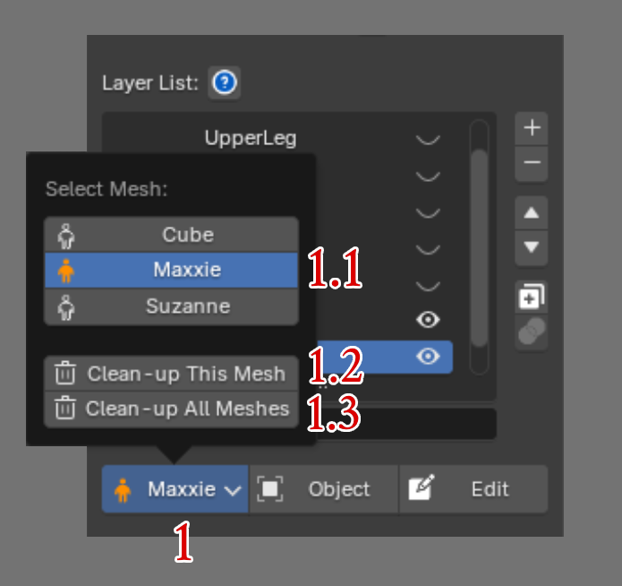

Clean-up Layer Data¶

You can press Current Bind Mesh to open an additional dropdown list, which shows the following:
1.1 ) Mesh List :
Lists every Bind Mesh in the scene. An orange icon means that model has already gone through Init Layer Data. A normal-colored icon means the model still stores its data as native Blender — it doesn't yet have the Layer system.
1.2 ) Clean-up This Mesh :
Reverts the current Bind Mesh's data, which has gone through Init Layer Data, back to native Blender.
1.3 ) Clean-up This Mesh :
Reverts every Mesh in the scene that has gone through Init Layer Data back to native Blender.
Result of Clean-up Mesh
-
Clean-up Mesh clears the Layer system data stored on that Mesh.
-
After pressing Clean-up, all Deform Bone and Skin Weight values stay exactly the same, but every Layer is automatically merged down into a single Layer, since native Blender doesn't support a multi-layer system.
Do you need to Clean-up Mesh?
-
You don't need to press Clean-up Mesh every time after Skin Weighting, since doing so means you can no longer edit the Layers data afterward.
-
Even without Clean-up, you can safely hand the file off to someone else — it opens and works normally even without the SuperSkinPro Add-on installed, with no errors at all.
-
The case where you actually need to Clean-up Mesh is when you want to go back to editing Skin Weight with Blender's native tools.